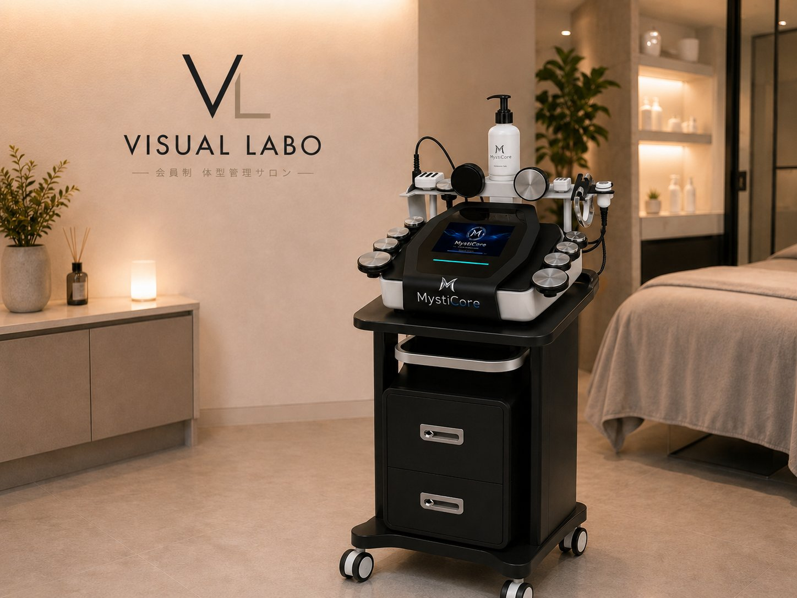
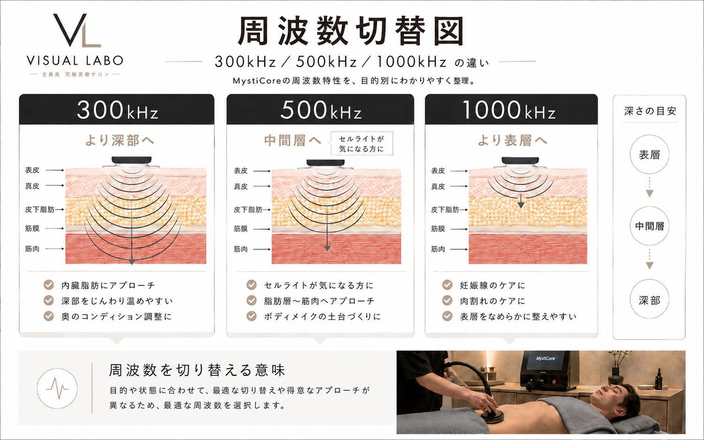
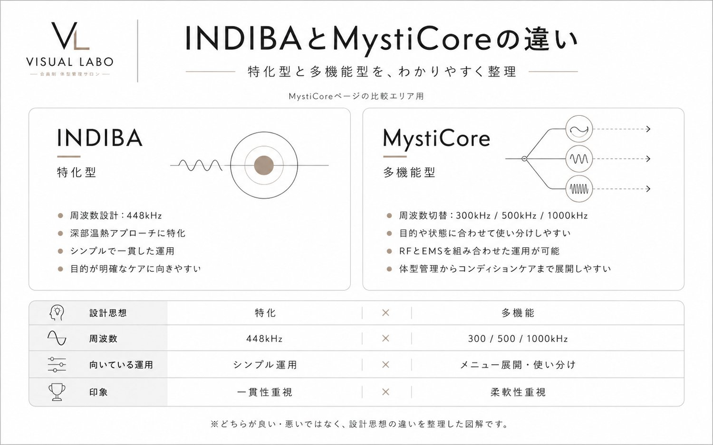

寝ているあいだに、温めて・動かすまで。
あなたの体型管理のために、自分たちでつくりました。
MystiCore®は、VISUAL LABOが自社開発した、高周波（RF）と EMSを1台に統合した次世代の温熱マシン。
私たちが現場の体型管理メニューのためにつくり込んだ、オリジナルマシンです。体の内側からじんわり温める高周波と、筋肉にはたらきかけるEMS。ふたつのアプローチをひとつにまとめ、「温めて、動かす」を同時に行えるのがMystiCore®の特長です。施術後はそのまま日常へ戻れる手軽さも魅力。施術の手順がきちんと決まっているので、どのスタッフが担当しても、同じように安定した施術をお届けします。

一般的な高周波の温熱機器は200〜250W前後とされるなか、MystiCore®は最大400W超（4×100W）。温熱機器としては、かなりの高出力です。この出力の高さが、脂肪と筋肉へのアプローチに、こんな違いを生みます。
施術を始めてから、ターゲットとなる深部（脂肪や筋肉）が狙った温度に達するまでの時間が、大きく短縮されます。
お腹まわりの頑固な脂肪や、筋肉量の多い体など、熱が通りにくい部位でも、一気に奥深くまで熱を届けます。
温まるのが早い分、脂肪や筋肉にアプローチする時間をしっかり確保。同じ施術時間でも、より効率的に向き合えます。
高周波の温熱機器として知られるINDIBA®。MystiCore®は同じ高周波の領域（500kHz）も含みながら、より深い300kHzや表層の1000kHzまで周波数を切り替えられ、さらにEMSを同時に行えるのが設計の違いです。どちらが優れているということではなく、「特化」と「応用」という設計思想の違いです。
| INDIBA® | MystiCore® | |
|---|---|---|
| 最大出力 | 200〜250W前後 | 400W 超（4×100W） |
| 周波数 | 448kHz（固定） | 300 / 448 / 500 / 1000kHz（切り替え） |
| 設計思想 | 深部加温に特化した完成型 | 深さを使い分ける応用型 |
| アプローチ | 高周波（温熱） | 高周波（温熱）＋ EMS（筋肉）を同時に |
| 得意なこと | じっくり深部を温める | 温めて、動かすまでを1台で |
448kHzの単一周波数に最適化された、深部加温の完成された機械。ひとつの深さに対して、洗練されたエネルギー伝達を行います。
表層から深部まで周波数を切り替え、状態に合わせてアプローチ。さらに高周波とEMSを同時に行い、「温める」と「動かす」をひとつにまとめた、VISUAL LABOの自社開発機です。

※ INDIBA®は他社の登録商標です。比較は周波数・設計に関する客観的な情報に基づくもので、優劣を示すものではありません。
該当される場合も、内容によっては施術可能なことがあります。ご不安な点は、カウンセリングでお気軽にご相談ください。安全のため、施術前に必ず体調とご状態を確認いたします。
| 名称 | MystiCore®（ミスティコア） |
| 開発 | VISUAL LABO（自社開発） |
| technology | 高周波（RF）× EMS 複合システム |
| 最大出力 | 400W 超（4 × 100W） |
| RF 周波数 | 300kHz / 448kHz / 500kHz / 1000kHz（深さに合わせて切替） |
| 主なモード | CET（温める）／ RET（深部加温）／ MIX |
| EMS | Hi-EMS（Drain / Slim / Fit ほか） |
| 特長 | 施術手順が決まっている・複数部位に対応・施術後すぐ日常へ |
※ 効果には個人差があります。本機器は医療行為・疾病の治療を目的とするものではありません。